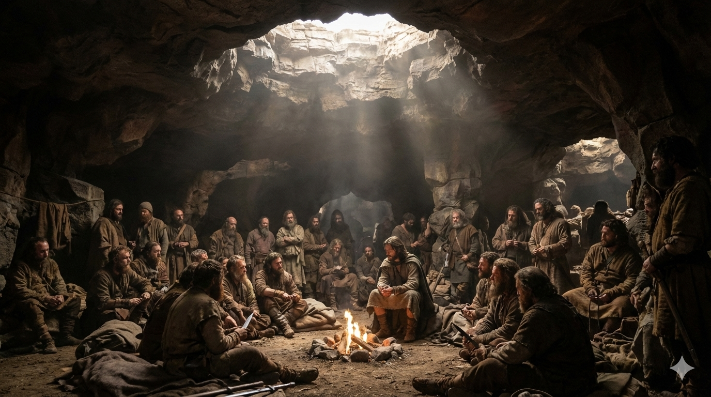

Vision
To raise a missionary generation of rugged intercessors who are skilled in manifesting the power of God, thereby revealing the Resurrected Christ.
Core Target Group
The vision primarily focuses on tertiary students and young professionals.
The Three Cardinal Drives
All activities of The Adullam Nation are designed to feed into three cardinal drives:
1. Missionary Orientation
Grounded in Matthew 28, we affirm that Jesus owns the world now—not just in the future. The Spirit-empowered Church is His primary strategy for discipling nations across the earth.
The early Church embodied this conviction. Some crossed land and sea to proclaim the kingdom, while others radically transformed their cities at great personal cost. Every believer is an enlisted soldier on a mission in a territory once ruled by rebels.
Adullam seeks to impart this military mindset by asking each believer:
• • What is the primary objective of Jesus’ government?
• • What are my personal mission orders from the Lord?
• • What must I sacrifice to fulfill the mission?
Expected Outcomes
• • A strong consciousness of the believer’s military mission
• • Deep intercessions for God’s will on earth
• • Strategic and active soul-winning
• • Demonstration of supernatural signs (healing, deliverance)
• • Robust Christlike character of love
• • Effective teaching and discipleship
• • Supernatural excellence in professional or business output
Key Activities
• • Teaching meetings
• • Camps
• • Mission trips
2. Rugged Intercession
Jesus modeled prayer as one of His greatest secrets in staying aligned with His mission. In Gethsemane, He secured victory through intense, rugged prayers, even to the point of sweating blood.
Adullam emphasizes practical training in prayer and fasting—linking them to mission accomplishment. Believers must be equipped to experience both meditative and aggressive prayer, as these are vital to resisting distractions and remaining focused on divine assignments.
Expected Outcomes
• • A consistent daily prayer time of at least one quality hour
• • Regular ability to stretch in prayer for at least 8 hours once a week
• • Familiarity with fasting disciplines, including 3–5 day water fasts and periodic 30-day 6-to-6 fasts
• • Discernment of God’s voice through dreams, visions, inner witness, and other spiritual means
Key Activities
• • Night vigils
• • 8, 12, and 24-hour prayer stretches
• • Corporate 3–5 day water fasts
• • Corporate extended 6-to-6 fasts
• • Prayer and fasting camps
3. Skills in Manifesting God’s Power
As Jesus declared in John 4:48: “Unless you see signs and wonders, you will in no way believe.”
The resurrection of Christ is a bold proclamation that demands supernatural evidence. Moral uprightness alone is insufficient; without supernatural witness, Christianity risks being mistaken for mere religion.
Adullam therefore trains believers to manifest both the basic supernatural evidences (healing, deliverance) and their unique spiritual gifts, empowering them for their specific mission.
Expected Outcomes
• • A risk-taking culture that steps out in faith
• • Understanding that sickness is never God’s will, as Jesus bore the scourging for humanity’s healing
• • Skills in casting out demons from people and places
• • Foundational prophetic ability
• • Development of diverse supernatural gifts suited to one’s unique mission
Key Activities
• • Camps
• • Supernatural gift workshops
• • Teaching meetings
• • Miracle and Healing meetings
• • Mission trips
• • SSHOP Evangelism (Street, School, Hospital, Prison)
The Three Phases of Adullam
Phase 1
Church planting and establishment
Phase 2
Prayer Center - Intercession for Nations, Birthing Destinies and Solutions to Needs
Phase 3
Camp training center - 90 day BootCamp
Conclusion
The Adullam Nation is a church with a deliberate training orientation, raising a generation of mission-minded, prayer-hardened, and power-equipped believers who will reveal the Resurrected Christ in every sphere of life.